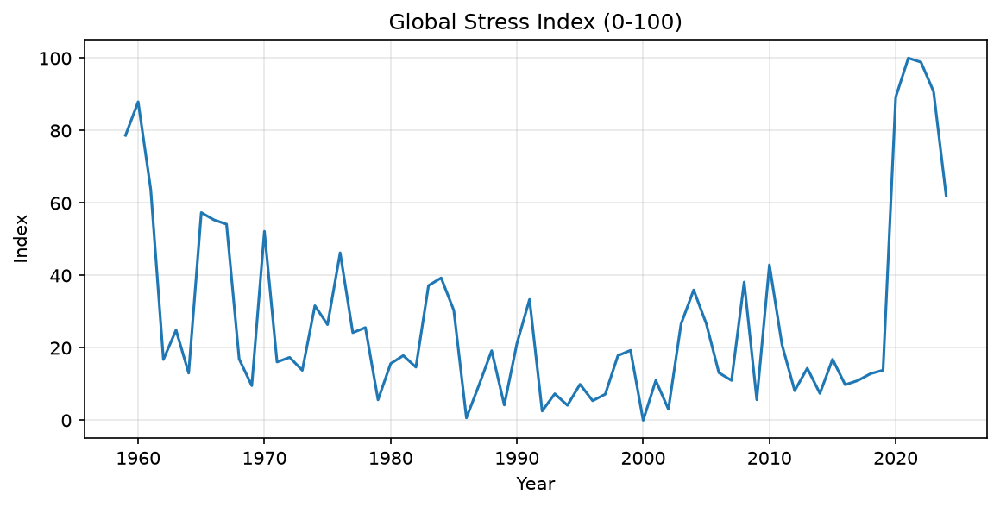
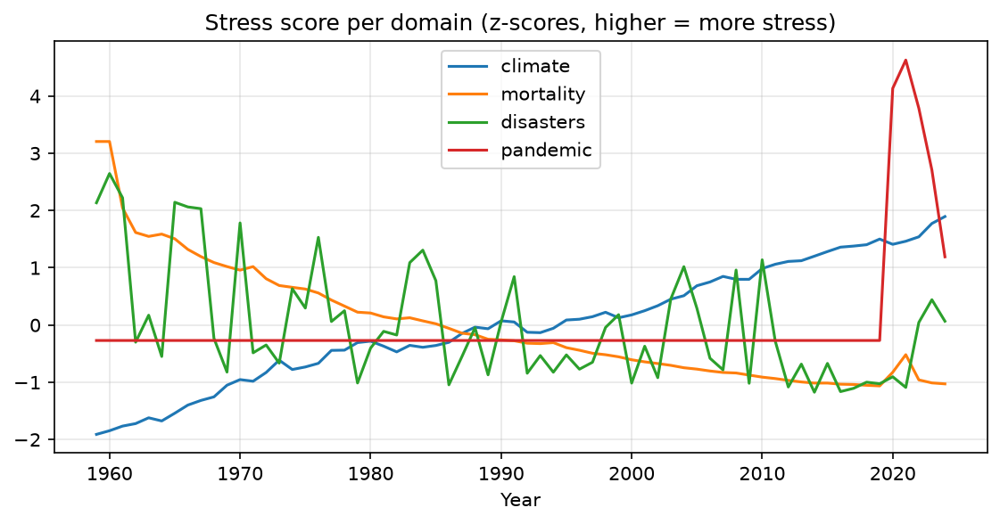
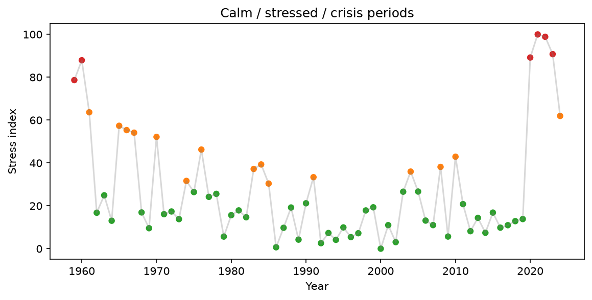
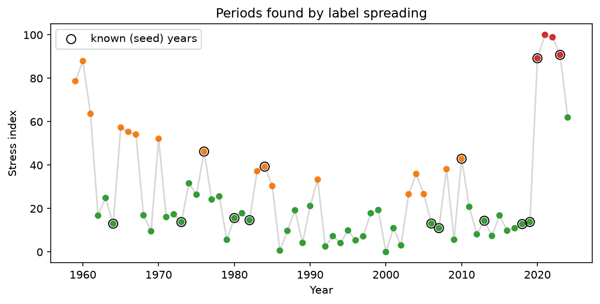
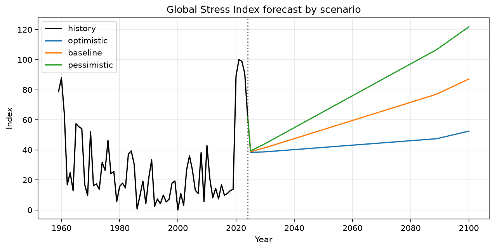

End of the World: A Global Stress Index and Peak Forecasting
Woosong University
Introduction to Machine Learning (Fall 2026)
November 2026
Abstract
We built a yearly Global Stress Index for 1959–2024 that combines climate, mortality, disaster and pandemic data, and used it to ask when global stress might peak. Principal component analysis (PCA) compressed five redundant climate indicators into one score, which we averaged with mortality, disaster and pandemic scores so that each domain counted equally. K-means clustering grouped the 66 years into 45 calm, 15 stressed and 6 crisis years, and semi-supervised label spreading, started from only 14 known years, recovered 88% of the labels of the remaining 52 years. The index peaked in 2021, the COVID-19 pandemic. Projected to 2100 under optimistic, baseline and pessimistic climate scenarios, the index did not peak: it reached about 52, 87 and 122 points on a 0–100 historical scale, and first reached crisis level in about 2083 (baseline) and 2058 (pessimistic), but not before 2100 (optimistic). On the 2016–2024 test years, our regression and Random Forest models did not clearly beat naive guesses, because the test window contains the only pandemic. The project is a data-driven hypothesis, not a prediction of a real “end of the world.”
Keywords: global stress index, PCA, K-means, label spreading, forecasting, scenarios
Introduction
Global stress is rising on several fronts at once, yet each front is usually measured on its own. This project builds one yearly index from four of them and asks when the combined stress might peak.
Background
Global well-being depends on several pressures that act at the same time. Disasters such as earthquakes, floods, storms and droughts cause deaths and economic damage every year (Ritchie et al., 2022). Rising atmospheric CO₂ and a growing global temperature anomaly strain ecosystems and public health (IPCC, 2021). Birth rates, death rates and life expectancy decide how vulnerable or resilient a society is when something goes wrong. Pandemics add a fourth pressure: COVID-19 showed that one outbreak can disrupt health systems, economies and daily life across the entire planet (Mathieu et al., 2020). These risks are usually studied separately, but in reality they interact and compound each other.
Problem Statement and Challenges
We found three main challenges.
No combined measure. No single indicator joins disaster, climate, demographic and pandemic pressure into one global picture, and each field keeps its own indicators.
No labels. An “end of the world” event has never happened, so there is no historical target for a normal supervised model. This is why our approach starts with unsupervised learning.
Messy data. The datasets differ in units, coverage and time span: NASA’s temperature record starts in 1880, NOAA’s CO₂ measurements in 1958, World Bank demographic series in 1960, and the COVID-19 data in 2020, so the pandemic is a single event.
Our key question is: in which year does combined global stress peak, and does that year change under optimistic, baseline and pessimistic scenarios?
Existing Solutions and Limitations
Most studies look at one domain only, such as climate, disasters or epidemics. Composite risk indices exist, for example the INFORM Risk Index (European Commission, Joint Research Centre, n.d.) and the WorldRiskIndex (Bündnis Entwicklung Hilft & IFHV, 2025), but they are country-level snapshots. They do not give a long-run global time series, and they do not forecast a peak. The planetary boundaries framework (Rockström et al., 2009) is valuable but conceptual: it names limits, not timing.
Our Contributions
A unified Global Stress Index for 1959–2024, built with PCA and an equal-weight combination of four domains.
Calm, stressed and crisis periods found automatically with K-means clustering and checked with semi-supervised label spreading.
A scenario projection to 2100 under optimistic, baseline and pessimistic climate trends, including the first year the index reaches crisis level.
An honest evaluation with a time-based train/test split, compared with naive baselines, and a Random Forest ranking of which indicators matter most.
The rest of this paper is organized as follows. The Related Works section reviews earlier global-risk models and the machine learning methods we build on. The Proposed Methodology section describes the data, the construction of the index, the clustering and forecasting methods, and the evaluation design. The Experiments and Result Analysis section reports the index, the periods, the scenario projections and the forecast errors. The Discussion section interprets these results and states their limits, and the Conclusion summarizes the findings and outlines future work.
Related Works
Our project combines earlier ideas about global limits and risk with standard machine learning methods; none of the earlier work forecasts a peak of combined global stress.
The Limits to Growth. Meadows et al. (1972) simulated population, resource use and pollution over time. It was a model-based study that was not fitted to today’s multi-source observations. Later studies compared its scenarios with observed data (Herrington, 2021; Turner, 2008). These studies test a fixed simulation against data; we instead build a new index from observed series.
Planetary Boundaries. Rockström et al. (2009) defined safe limits for nine Earth-system processes. The framework gives thresholds but no timing and no peak-year forecast. The framework was updated by Steffen et al. (2015), and Richardson et al. (2023) estimated that six of the nine boundaries have been transgressed. These assessments describe how far each process is from its limit at one point in time, not how combined stress changes from year to year.
Composite Risk Indices. The INFORM Risk Index (European Commission, Joint Research Centre, n.d.) and the WorldRiskIndex (Bündnis Entwicklung Hilft & IFHV, 2025) combine hazard, exposure and vulnerability. They are cross-sectional snapshots by country, not a unified global time series. The handbook of the OECD and the Joint Research Centre (OECD & European Commission, Joint Research Centre, 2008) lists the usual steps for building a composite indicator: select indicators, normalize them, choose weights and aggregate. Cutter et al. (2003) used PCA to build a social vulnerability index from many variables. We follow these steps, with PCA for the climate domain and equal weights across domains.
Climate Scenarios. The IPCC Sixth Assessment Report (IPCC, 2021) provides detailed climate scenarios, but it covers the physical climate only, not health or demographics. We borrow its idea of comparing optimistic, baseline and pessimistic paths, with much simpler trend assumptions. The shared socioeconomic pathways (O’Neill et al., 2014) show how a small set of scenarios can bracket an uncertain future without assigning probabilities to each path, which is how we use our optimistic, baseline and pessimistic paths.
Machine Learning Methods. PCA (Jolliffe & Cadima, 2016) compresses correlated indicators into a few components. K-means (Lloyd, 1982) groups observations without labels. Label spreading (Zhou et al., 2004) lets a few known labels propagate to similar unlabelled points. Random forests (Breiman, 2001) give accurate predictions and rank the importance of input variables.
Forecast Evaluation. Forecasting textbooks recommend testing a model on a later period and comparing it with simple benchmarks such as the mean and the last observed value (Hyndman & Athanasopoulos, 2021). We follow both rules: a chronological split and two naive benchmarks.
The Gap. We combine disaster, climate, demographic and pandemic signals into one global yearly index and ask when it peaks, using these standard methods together. Composite risk indices lack a time dimension and a forecast, and global simulations are not built from observed series. Our contribution is to bring the two ideas together in the simplest form that still lets us ask when stress peaks.
Proposed Methodology
We aligned public datasets to one yearly axis, built the index in two steps (PCA for the climate domain, then an equal-weight average of four domains), grouped the years, and evaluated forecasts on later years only. All code is in the project repository and uses Python with scikit-learn (Pedregosa et al., 2011).
Data
Table 1 lists the sources we actually used. Our proposal also named the USGS earthquake catalog, UN World Population Prospects, WHO and OpenAQ; we did not use them because the World Bank and Our World in Data cover the same indicators at world level.
| Domain | Indicators | Source |
|---|---|---|
| Climate | Global temperature anomaly (annual mean, °C) | NASA GISTEMP (GISTEMP Team, n.d.; Lenssen et al., 2019) |
| Climate | Atmospheric CO₂ (ppm, annual mean) | NOAA Mauna Loa (NOAA Global Monitoring Laboratory, n.d.) |
| Climate | CO₂ per capita, methane, nitrous oxide, world population | Our World in Data CO₂ data (Ritchie et al., 2023) |
| Mortality | Crude death rate (per 1,000 people); birth rate and life expectancy were also cleaned | World Bank (n.d.) |
| Disasters | Annual deaths from all natural disasters | EM-DAT (CRED/UCLouvain, 2026) via Our World in Data (Ritchie et al., 2022) |
| Pandemic | COVID-19 deaths per million people | Our World in Data (Mathieu et al., 2020) |
Preprocessing
Every source was reduced to one row per year for 1959–2024. The range ends in 2024 because the OWID methane and nitrous oxide series end in 2024 and 2025 is a partial year in EM-DAT. Missing values in smooth series were filled by linear interpolation. The World Bank series start in 1960, so 1959 repeats 1960. For disasters, a blank cell in EM-DAT means no recorded deaths, so we filled it with 0. Disaster and COVID-19 deaths were divided by world population and log-transformed (log of 1 plus the value), because a few extreme years otherwise dominate; the skewness of disaster deaths per million fell from 3.2 to 1.0. All indicators were then standardized with z-scores.
Formally, let be indicator in year . Deaths were divided by world population and log-transformed (Equation 1), and every indicator was then standardized with its mean and standard deviation over 1959–2024 (Equation 2). The sign is when a higher value means more stress and otherwise, so that in every standardized series higher means more stress.
We also removed redundant columns. Total CO₂ emissions and total greenhouse gases correlated at about 1.00 with other climate columns, and life expectancy correlated at about −0.97 with birth and death rates (Pearson r). Birth rate was left out of the stress index because a falling birth rate has no clear “stress” direction.
Building the Global Stress Index
A single PCA over all indicators produced a first component that was mostly a time trend (it explained 76% of the variance), gave falling mortality and disaster deaths a negative loading, and ignored COVID-19. We therefore built the index in two steps:
Climate score. PCA compressed the five climate indicators (temperature anomaly, CO₂ ppm, CO₂ per capita, methane, nitrous oxide) into one score. The first component explained 92.9% of their variance, with loadings between 0.42 and 0.46.
Equal-weight domains. The index is the average of four standardized domain scores: climate, mortality (death rate), disasters (log deaths per million) and pandemic (log COVID-19 deaths per million). Every score is oriented so that higher means more stress. The result was rescaled to 0–100 over 1959–2024.
Let be the first-component loading of climate indicator . The climate score is the weighted sum of the five standardized climate indicators, standardized again with its own mean and standard deviation (Equation 3). The index averages the four domain scores (Equation 4) and rescales the average to 0–100 over 1959–2024 (Equation 5).
Periods and Label Spreading
K-means with k = 3 grouped the years into calm, stressed and crisis periods, with k chosen by the elbow method and the silhouette score. As a semi-supervised check, we kept only the 20% most typical years of each period as known labels (14 of 66 years) and hid the rest. Label spreading (k-nearest-neighbour kernel, 5 neighbours, α = 0.2) on the four domain scores then had to label the hidden years. A second label spreading model on the index value alone labelled future scenario years.
K-means chooses the three periods , and that minimize the within-period sum of squares around the mean index of each period (Equation 6). Label spreading computes label scores (Equation 7), where holds the known labels (zero for hidden years), is the normalized -nearest-neighbour similarity matrix and sets how strongly labels spread (Zhou et al., 2004). Each hidden year receives the period with the largest score.
Trend Fits and Scenarios
We fitted linear, quadratic and cubic trends to the index and a Random Forest (300 trees) that predicts the index from each indicator one and two years earlier. For the scenarios, we extended each indicator with the linear trend of its last 20 years to 2100 and multiplied the slopes of the climate indicators by 0.5 (optimistic), 1.0 (baseline) and 1.5 (pessimistic). Non-climate indicators were not allowed to fall below their historical minimum, and we assumed no new pandemic.
For indicator , let be the least-squares line through its last 20 standardized values and let . Under scenario the indicator is extended as in Equation 8, where is 0.5, 1.0 or 1.5 for climate indicators and 1 for all others. Non-climate indicators are then floored at their historical minimum, and the pandemic indicator is held at its minimum.
Evaluation
Models were trained on 1959–2015 (57 years, about 86% of the 66 years) and tested on 2016–2024 (9 years, about 14%) with no shuffling, because a random split would let the model see years on both sides of each test year and make the errors look better than they are, and scored with mean absolute error (MAE) and root mean squared error (RMSE). Two naive guesses served as baselines: repeating the last training value and predicting the training mean. We also repeated the comparison on an index without the pandemic domain.
With the index and the prediction for the test years, the two error measures are given in Equations 9 and 10.
Software and Reproducibility
The analysis is a modular Python pipeline (Appendix A, Table A1). Each of the three team members cleaned the raw data for one part of the index and ran the models for it in a separate module: disasters and pandemic, climate, and mortality. Every module writes its result in the same format: one row per year for 1959–2024, a standardized and oriented column for each indicator, a standardized domain score, and a small file that records the weight and scenario rule of each indicator. A validation step rejects a file that breaks this format, so the modules can be developed in parallel and combined without manual editing. The combining script then builds the index, the periods, the scenarios and the evaluation from these files only.
To keep the results repeatable, all settings (study window, train and test split, random seed 42, number of trees, label-spreading parameters and scenario multipliers) are stored in one configuration file. An automated test suite checks the cleaning rules, the file format and the main properties of the output, such as the 0–100 scale of the index and the order of the three scenarios.
Experiments and Result Analysis
The index peaked in 2021, the scenarios keep rising to 2100, and the forecasting models were no better than naive guesses on the 2016–2024 test years. This section shows each result in turn.
The Global Stress Index
Figure 1 shows the index on its 0–100 scale. It was highest in 1959–1960 (79 and 88) and in 2020–2023 (about 89 to 100), with a peak of 100 in 2021. Between these periods it stayed mostly below 40, with short spikes in years with very high recorded disaster deaths.

Figure 2 splits the index into its four domain scores. The climate score rises steadily from about −1.9 in 1959 to +1.9 in 2024. The mortality score falls from 3.2 in 1959–1960 to about −1.0, and the disaster score is noisy with a slight downward drift. The pandemic score is flat until 2019 and reaches 4.6 in 2021. The early-1960s peak therefore comes from mortality and disasters, the 2021 peak from the pandemic, and the long rise in climate stress is hidden by falling mortality until the pandemic.

Calm, Stressed, and Crisis Periods
We chose k = 3 for interpretability (calm, stressed, crisis). Table 2 shows that k = 2 has the highest silhouette score, but k = 3 is still a good separation (0.667) and the elbow in the inertia bends at k = 3.
| k | Inertia | Silhouette |
|---|---|---|
| 2 | 10,485 | 0.715 |
| 3 | 4,428 | 0.667 |
| 4 | 2,264 | 0.606 |
| 5 | 1,358 | 0.571 |
| 6 | 914 | 0.593 |
With k = 3, the 66 years split into 45 calm, 15 stressed and 6 crisis years (Figure 3). The crisis years are 1959, 1960 and 2020–2023; 2024 is stressed.

For the semi-supervised check, only 14 years were known (9 calm, 3 stressed and 2 crisis); the other 52 were hidden. Label spreading recovered 88% of the hidden labels (46 of 52). Table 3 shows where the two methods differ: 1959, 1960, 1974, 2003, 2005 and 2024. The early-1960s years were labelled stressed and not crisis, because the known crisis years are pandemic years and these years are driven by mortality instead. 2024, the year after the pandemic, was labelled calm because its four-domain pattern resembles recent calm years even though its index is 62.
| K-means label | Spreading: calm | Spreading: stressed | Spreading: crisis |
|---|---|---|---|
| Calm | 34 | 2 | 0 |
| Stressed | 2 | 10 | 0 |
| Crisis | 0 | 2 | 2 |

Forecast Scenarios to 2100
In all three scenarios the index is still rising in 2100, so there is no peak before 2100 (Table 4, Figure 5). Only the baseline and pessimistic scenarios reach the crisis level seen in history, in about 2083 and 2058. The drop from 62 in 2024 to about 38 in 2025 is a modelling assumption: the projection assumes no new pandemic, so the pandemic score returns to zero.
| Scenario | Climate trend multiplier | Index in 2100 | First crisis-level year |
|---|---|---|---|
| Optimistic | 0.5 | 52.5 | None by 2100 |
| Baseline | 1.0 | 87.1 | 2083 |
| Pessimistic | 1.5 | 121.8 | 2058 |

Model Evaluation
Table 5 compares the models with the naive guesses on the 2016–2024 test years. On the full index, the best model (quadratic trend, MAE 37.1) is slightly better than the naive guesses (MAE 41.1 and 41.8), and the Random Forest (MAE 41.3) is about as good as repeating the training mean. The reason is in the test window: the index sits at 10–14 in 2016–2019 and then jumps to about 90–100 in 2020–2023, a pandemic that no model trained on 1959–2015 could foresee. Without the pandemic domain, the quadratic trend (MAE 11.6) is no better than repeating the last value (MAE 11.3). The models therefore have no demonstrated skill beyond a naive guess here, and we use the scenarios as trend projections, not as forecasts of a single year.
| Target | Model | MAE | RMSE |
|---|---|---|---|
| Full index | Linear trend | 49.5 | 63.9 |
| Full index | Quadratic trend | 37.1 | 43.6 |
| Full index | Cubic trend | 44.5 | 58.8 |
| Full index | Random Forest (lags) | 41.3 | 53.3 |
| Full index | Naive: last value | 41.8 | 54.3 |
| Full index | Naive: training mean | 41.1 | 49.9 |
| Without pandemic | Linear trend | 20.0 | 25.0 |
| Without pandemic | Quadratic trend | 11.6 | 13.2 |
| Without pandemic | Cubic trend | 14.4 | 19.9 |
| Without pandemic | Naive: last value | 11.3 | 14.9 |
| Without pandemic | Naive: training mean | 12.4 | 13.5 |
Note. MAE = mean absolute error; RMSE = root mean squared error. Errors are in index points on a 0–100 scale.
Which Indicators Matter
The Random Forest ranks last year’s temperature anomaly highest (importance 0.188), followed by last year’s disaster score (0.156), the temperature anomaly two years back (0.138) and CO₂ per capita one year back (0.122). Climate indicators and the disaster score together carry most of the importance, and the death rate adds little (0.041 at best). This ranking should be read with care: the index is built from the same indicators, so the ranking is partly circular, and with 66 rows the importances are not stable.
Discussion
Interpretation of the Index
The index behaves as its construction implies. Its two highest periods have different causes: the early 1960s reflect high mortality and large recorded disaster deaths, while 2020–2023 reflect the pandemic. In between, climate stress rose steadily but was offset by falling mortality, so the index stayed low until a single shock arrived. A composite of this kind can therefore hide a slow trend when a faster, opposing trend is present, which is why we show the four domain scores next to the index (Figure 2). The 2021 peak should be read as the strongest single-year pressure in the record and not as the highest long-run risk.
The scenarios make the opposite point. Once mortality and disaster stress reach their historical minimum and the pandemic is held at zero, the climate score is the only domain that keeps rising, so the projected index is driven almost entirely by the climate trend and the three scenarios differ only in how fast that trend continues. The values in 2100 (about 52, 87 and 122) are consequences of this assumption and not independent evidence about the future.
Label spreading reproduced 88% of the K-means labels from only 14 known years, so the calm, stressed and crisis periods are fairly stable. The disagreements in Table 3 are informative: they occur in years where the index value and the four-domain pattern point in different directions, such as 1959, 1960 and 2024.
Comparison With Earlier Work
Unlike the Limits to Growth simulations (Meadows et al., 1972), the index is built from observed series and assumes no structural equations, but for the same reason it cannot represent feedback between domains. Unlike the planetary boundaries (Rockström et al., 2009), it has a time dimension, but it defines no threshold for a safe level. Unlike the INFORM Risk Index and the WorldRiskIndex, it is global and not country-level, but it cannot show which regions are most exposed. The index is therefore a complement to these tools and not a replacement.
Limitations
Disaster reporting is less complete in the early decades, and the 1959–1961 values are very large.
COVID-19 is a single pandemic event, and the test years 2016–2024 contain it, so no model trained on earlier years could have anticipated it.
The equal weight of four domains is a choice, not a result; other weights would change the index.
The Random Forest importance ranking is partly circular, because the index is built from the same indicators, and we have only 66 yearly rows.
The scenarios extend recent linear trends, assume no new pandemic and keep mortality and disaster stress at their historical minimum once they reach it. The index is scaled 0–100 over 1959–2024, so projected values can exceed 100.
World Bank data starts in 1960, so 1959 repeats 1960.
Three of the four domains are each represented by one indicator (death rate, disaster deaths and COVID-19 deaths), so any error or reporting bias in that series passes directly into the index.
The 0–100 scale was set over the whole 1959–2024 window, so the test years help define the scale on which the models are scored. The models never see test values, but the scale would change if more years were added.
Conclusion
Combining climate, mortality, disaster and pandemic data gives one interpretable yearly stress index, and under our assumptions it has no peak before 2100.
The most stressed observed year was 2021, driven by COVID-19, with a second high period in the early 1960s driven by mortality and disasters. Climate stress rises steadily across the whole record, while mortality and disaster stress fall. In the projections, the index is still rising in 2100 in all three scenarios, and it first reaches crisis level in about 2083 (baseline) and 2058 (pessimistic), but not before 2100 in the optimistic case. Label spreading from only 14 known years reproduced 88% of the K-means labels of the other years, so the calm, stressed and crisis periods are fairly stable. The forecasting models, however, did not clearly beat naive guesses, so we treat the scenarios as projections of trends and not as predictions.
Future Work
Future work could add the USGS earthquake catalog and air-quality data, test other domain weights, model shocks separately from trends (for example with detrended indicators), and compare against dedicated time-series models.
This project is a data-driven hypothesis, not a prediction of an actual “end of the world.”
References
Breiman, L. (2001). Random forests. Machine Learning, 45(1), 5–32. https://doi.org/10.1023/A:1010933404324
Bündnis Entwicklung Hilft & Institute for International Law of Peace and Armed Conflict (IFHV). (2025). WorldRiskReport 2025. https://ifhv.de/research/projects/WorldRiskReport
CRED/UCLouvain. (2026). EM-DAT: The international disasters database [Data set]. Centre for Research on the Epidemiology of Disasters, Université catholique de Louvain. https://emdat.be/
Cutter, S. L., Boruff, B. J., & Shirley, W. L. (2003). Social vulnerability to environmental hazards. Social Science Quarterly, 84(2), 242–261. https://doi.org/10.1111/1540-6237.8402002
European Commission, Joint Research Centre. (n.d.). INFORM Risk Index [Data set]. https://drmkc.jrc.ec.europa.eu/inform-index
GISTEMP Team. (n.d.). GISS surface temperature analysis (GISTEMP), version 4 [Data set]. NASA Goddard Institute for Space Studies. https://data.giss.nasa.gov/gistemp/
Herrington, G. (2021). Update to limits to growth: Comparing the World3 model with empirical data. Journal of Industrial Ecology, 25(3), 614–626. https://doi.org/10.1111/jiec.13084
Hyndman, R. J., & Athanasopoulos, G. (2021). Forecasting: Principles and practice (3rd ed.). OTexts. https://otexts.com/fpp3/
IPCC. (2021). Climate change 2021: The physical science basis. Contribution of Working Group I to the Sixth Assessment Report of the Intergovernmental Panel on Climate Change (V. Masson-Delmotte, P. Zhai, A. Pirani, S. L. Connors, C. Péan, S. Berger, N. Caud, Y. Chen, L. Goldfarb, M. I. Gomis, M. Huang, K. Leitzell, E. Lonnoy, J. B. R. Matthews, T. K. Maycock, T. Waterfield, O. Yelekçi, R. Yu, & B. Zhou, Eds.). Cambridge University Press. https://doi.org/10.1017/9781009157896
Jolliffe, I. T., & Cadima, J. (2016). Principal component analysis: A review and recent developments. Philosophical Transactions of the Royal Society A, 374(2065), Article 20150202. https://doi.org/10.1098/rsta.2015.0202
Lenssen, N. J. L., Schmidt, G. A., Hansen, J. E., Menne, M. J., Persin, A., Ruedy, R., & Zyss, D. (2019). Improvements in the GISTEMP uncertainty model. Journal of Geophysical Research: Atmospheres, 124(12), 6307–6326. https://doi.org/10.1029/2018JD029522
Lloyd, S. P. (1982). Least squares quantization in PCM. IEEE Transactions on Information Theory, 28(2), 129–137. https://doi.org/10.1109/TIT.1982.1056489
Mathieu, E., Ritchie, H., Rodés-Guirao, L., Appel, C., Giattino, C., Hasell, J., Macdonald, B., Dattani, S., Beltekian, D., Ortiz-Ospina, E., & Roser, M. (2020). Coronavirus pandemic (COVID-19). Our World in Data. https://ourworldindata.org/coronavirus
Meadows, D. H., Meadows, D. L., Randers, J., & Behrens, W. W., III. (1972). The limits to growth. Universe Books.
NOAA Global Monitoring Laboratory. (n.d.). Trends in atmospheric carbon dioxide [Data set]. National Oceanic and Atmospheric Administration. https://gml.noaa.gov/ccgg/trends/
OECD & European Commission, Joint Research Centre. (2008). Handbook on constructing composite indicators: Methodology and user guide. OECD Publishing. https://doi.org/10.1787/9789264043466-en
O’Neill, B. C., Kriegler, E., Riahi, K., Ebi, K. L., Hallegatte, S., Carter, T. R., Mathur, R., & van Vuuren, D. P. (2014). A new scenario framework for climate change research: The concept of shared socioeconomic pathways. Climatic Change, 122(3), 387–400. https://doi.org/10.1007/s10584-013-0905-2
Pedregosa, F., Varoquaux, G., Gramfort, A., Michel, V., Thirion, B., Grisel, O., Blondel, M., Prettenhofer, P., Weiss, R., Dubourg, V., Vanderplas, J., Passos, A., Cournapeau, D., Brucher, M., Perrot, M., & Duchesnay, É. (2011). Scikit-learn: Machine learning in Python. Journal of Machine Learning Research, 12, 2825–2830.
Richardson, K., Steffen, W., Lucht, W., Bendtsen, J., Cornell, S. E., Donges, J. F., Drüke, M., Fetzer, I., Bala, G., von Bloh, W., Feulner, G., Fiedler, S., Gerten, D., Gleeson, T., Hofmann, M., Huiskamp, W., Kummu, M., Mohan, C., Nogués-Bravo, D., ... Rockström, J. (2023). Earth beyond six of nine planetary boundaries. Science Advances, 9(37), Article eadh2458. https://doi.org/10.1126/sciadv.adh2458
Ritchie, H., Rosado, P., & Roser, M. (2022). Natural disasters. Our World in Data. https://ourworldindata.org/natural-disasters
Ritchie, H., Rosado, P., & Roser, M. (2023). CO₂ and greenhouse gas emissions. Our World in Data. https://ourworldindata.org/co2-and-greenhouse-gas-emissions
Rockström, J., Steffen, W., Noone, K., Persson, Å., Chapin, F. S., III, Lambin, E. F., Lenton, T. M., Scheffer, M., Folke, C., Schellnhuber, H. J., Nykvist, B., de Wit, C. A., Hughes, T., van der Leeuw, S., Rodhe, H., Sörlin, S., Snyder, P. K., Costanza, R., Svedin, U., … Foley, J. A. (2009). A safe operating space for humanity. Nature, 461(7263), 472–475. https://doi.org/10.1038/461472a
Steffen, W., Richardson, K., Rockström, J., Cornell, S. E., Fetzer, I., Bennett, E. M., Biggs, R., Carpenter, S. R., de Vries, W., de Wit, C. A., Folke, C., Gerten, D., Heinke, J., Mace, G. M., Persson, L. M., Ramanathan, V., Reyers, B., & Sörlin, S. (2015). Planetary boundaries: Guiding human development on a changing planet. Science, 347(6223), Article 1259855. https://doi.org/10.1126/science.1259855
Turner, G. M. (2008). A comparison of The Limits to Growth with 30 years of reality. Global Environmental Change, 18(3), 397–411. https://doi.org/10.1016/j.gloenvcha.2008.05.001
World Bank. (n.d.). World development indicators [Data set]. https://data.worldbank.org/
Zhou, D., Bousquet, O., Lal, T. N., Weston, J., & Schölkopf, B. (2004). Learning with local and global consistency. In S. Thrun, L. Saul, & B. Schölkopf (Eds.), Advances in neural information processing systems (Vol. 16, pp. 321–328). MIT Press.
Appendix A
Project Modules and Hand-off Format
Table A1 lists what each module does and what it writes. Each module can be run on its own, so a team member can test and report their part without waiting for the others.
| Module | Command | Writes | Methods run |
|---|---|---|---|
| Disasters and pandemic | python -m modules.disasters_pandemics | disasters, pandemic | Log deaths per million; trend fits; naive baselines; Random Forest on lags; K-means model selection |
| Climate | python -m modules.climate | climate | Redundancy check; PCA (five indicators to one score); same trend, baseline, Random Forest and K-means set |
| Mortality | python -m modules.demographics | mortality | Redundancy check of birth rate, death rate and life expectancy; same trend, baseline, Random Forest and K-means set |
| Combining script | python combine.py | index, periods, scenarios, test errors, figures | Index; K-means; label spreading; scenario projection; trend fits and Random Forest on the index |
Note. All modules read their settings from one configuration file and write one row per year for 1959–2024.